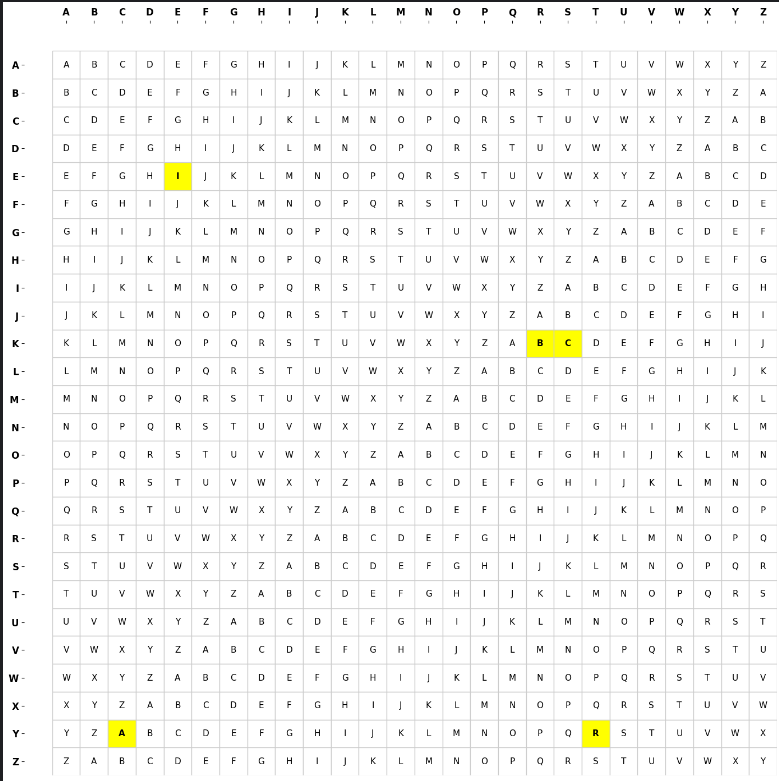
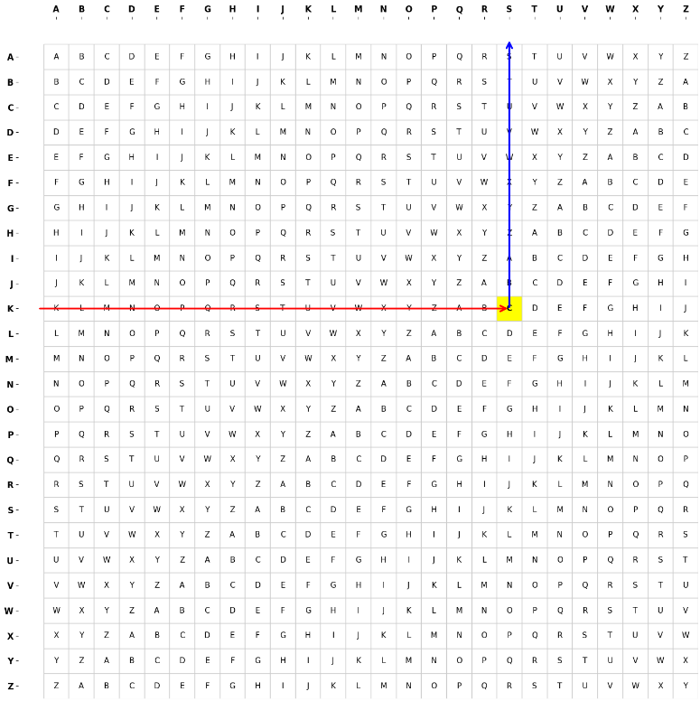

Brief History About the Vigenère Cipher?
The Vigenère cipher is a simple classic poly-alphabetic substitution cipher, named after Blaise de Vigenère, although it was created by Italian cryptographer Giovan Battista Bellaso in his 1553 book "La cifra del Sig. Giovan Battista Bellaso. Throughout out history, Bellaso's work was incorrectly attributed to Vigenère, due to Vigenère's published work on the autokey cipher in his 1586 book "Traictè des chiffres ou secrètes manières descrire".
How Does Vigenère's Cipher Work
The Vigenère cipher encrypts a message by encoding each letter in the plaintext with a different Caesar cipher, whose shift value is determined by the corresponding letter of the chosen key or keyword. To encrypt a plaintext message, you would first need to write out your plaintext message, along with the keyword's letters above the plaintext message. If the keyword is shorter than the plaintext, you would repeat the keyword until the very end of the plaintext message. There are two rules your keyword must follow:
- Your keyword cannot be longer than your plaintext.
- Your keyword must be less than or equal in length to the plaintext message.
- If your keyword is the same length as your plaintext message, this would be considered a one-time pad (theoretically seen as an unbreakable cipher).
After writing down the plaintext message and keyword in the right format, use the tabula recta to look up the ciphertext letters or use the algebraic equation.
Encrypting Using The Tabula Recta

For a visual way to encrypt or decrypt text, a table of alphabets can be used, also known as the tabula recta. The tabula recta is a 26x26 matrix, where the alphabet is written out 26 times in different rows, with each alphabet shifted cyclically to the left. Let's say we wish to send the message "SECRET" with the key "KEY". First you would draw out a table with the message at the bottom, and the key at the top.
| K | E | Y | K | E | Y |
| S | E | C | R | E | T |
By using the tabular recta, in order to encrypt the first letter of the plaintext, you'd go to row "K", column "S". "C" would be your first cipher letter. In order to encrypt the second letter of your plain text, you would go to row "E", column "E". The letter "I" would be your second cipher letter. After continuing the same process, your ciphertext result would be "CIABIR". Here is a visual representation of the tabula recta with the appropriate cipher letters highlighted within the tabula recta.

Decrypting Using The Tabula Recta
The decryption process using the tabula recta follows the same principle of encryption. To decrypt the first letter of the ciphertext "CIABIR", go to the row for the key letter "K", and find the ciphertext letter "C" within. The row in which "C" aligns with column S. The letter “S” would become our first plaintext letter. Repeat this process, and you'll end up with the message "SECRET".

Encrypting Using The Algebraic Expression
If you convert the English alphabet letters A-Z into numerical values 0-25 (based on their position in the
alphabet), the Vigenère cipher can be expressed algebraically.
The algebraic formula can be written out like this:
- Ci = (Pi + Ki) mod 26
- C is the cipher text
- P is the plaintext message
- K is the key
- i equates to the letter's index
- mod 26 is modulo 26
Before jumping into encryption, it's best to create a 2x26 table. In the top row, write the numbers 0-25. On the bottom row, write the letters A-Z. This can be used as a reference as to what each letter's index is in the alphabet
| 0 | 1 | 2 | 3 | 4 | 5 | 6 | 7 | 8 | 9 | 10 | 11 | 12 | 13 | 14 | 15 | 16 | 17 | 18 | 19 | 20 | 21 | 22 | 23 | 24 | 25 |
| A | B | C | D | E | F | G | H | I | J | K | L | M | N | O | P | Q | R | S | T | U | V | W | X | Y | Z |
We'll be using our example from above. Our plaintext message is SECRET and our key is KEY. Use the layout we used before.
| K | E | Y | K | E | Y |
| S | E | C | R | E | T |
In order to encrypt the letter "S" from our plaintext, we must find the index for "S" and "K". The index for "S " is 18, and the index for "K" is 10. Plug those numbers into the formula.
- Ci = (Pi + Ki) mod 26
- C = (18 + 10) mod 26
- C = (28) mod 26
- C = 2
- C = C
The letter "C" is our first ciphertext character. You would continue this process until the very end. Our final ciphertext message would be "CIABIR".
Decrypting Using The Algebraic Expression
The decryption process follows the same principle, but the formula for decryption is:
- Pi = (Ci - Ki) mod 26
- P is the plaintext message
- C is the cipher text
- K is the key
- i equates to the letter's index
- mod 26 is modulo 26
Remember to write out your message and key, like we did above, and refer to the index table above.
| K | E | Y | K | E | Y |
| C | I | A | B | I | R |
In order to decrypt the letter "C" from our cipher, we must find the index for "C" and "K". The index for "C" is 2, and the index for "K" is 10. Plug those numbers into the formula.
- Pi = (Ci - Ki) mod 26
- P = (2 - 10) mod 26
- P = (-8) mod 26
- P = 18
- P = S
The letter "S" is our first plaintext character. You would continue this process until the very end. Our final plaintext message would result in "SECRET".
Security Implications
Vigenère's cipher was unbreakable for about 300 years, but cryptanalysts have proved the Vigenère cipher to be breakable. Kasiski's Test (published by German cryptologist Friedrich Wilhelm Kasiski in 1863) focused on the analysis of repeated fragments in the cipher, which can give hints as to the length of the key used. It was believed that Charles Babbage came up with this concept beforehand, but he never published anything about it. Friedman's Test is another cryptanalysis method that is used to calculate the index of coincidence of a ciphertext. The index of coincidence helps to reveal whether the ciphertext was encrypted with a monoalphabetic or polyalphabetic cipher, along with retrieving the possible key length. There are other heuristics out there that can break a Vigenère cipher like hill climbing, etc.
Sources
- Christensen, C. (2019). Section 15: William Friedman, index of coincidence. Northern Kentucky University. https://websites.nku.edu/~christensen/section%2015%20william%20friedman%20index%20of%20coincidence.pdf
- Klima, R. E., Sigmon, N. (2018). Cryptology: Classical and modern. CRC Press.
- Igarashi, Y., Altman, T., Funada, M., & Kamiyama, B. (2014). Computing: A historical and technical perspective. CRC Press.